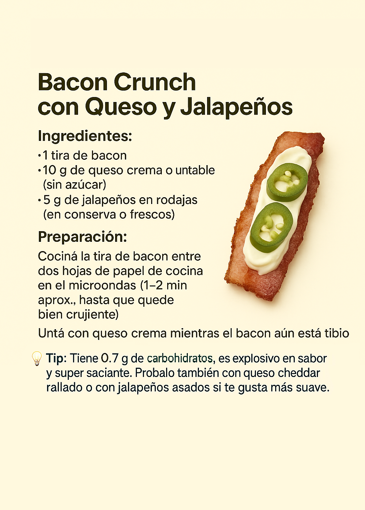
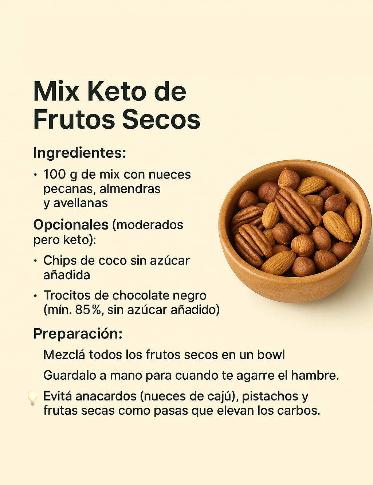
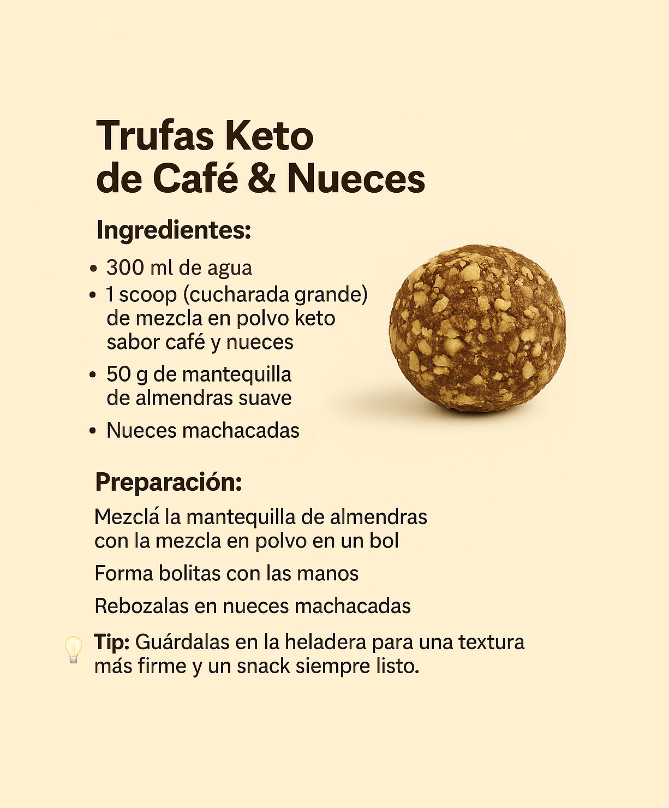
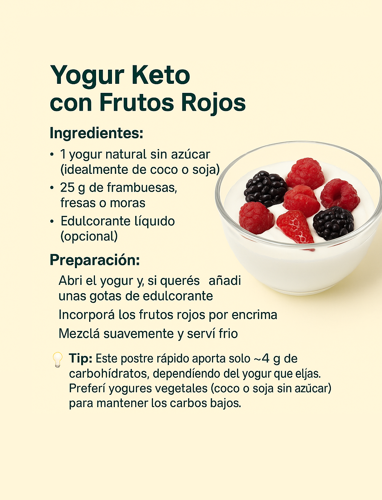
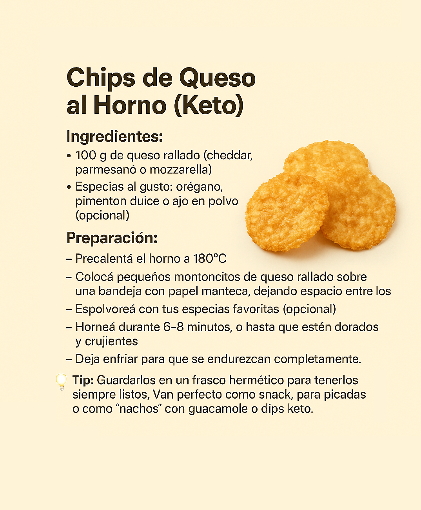
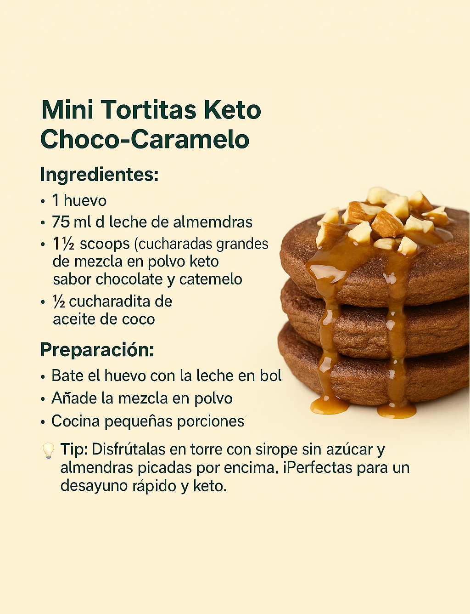

📘 Conocé el eBook Keto Fácil por dentro
🎯 Seis Snacks Keto:

Bacon Crunch con Queso y Jalapeños

Mix Keto de Frutos Secos

Trufas Keto de Café y Nueces

Yogur Keto con Frutos Rojos

Chips de Queso al Horno(keto)

Mini Tortitas Keto de Choco-Caramelo
📚 Guías útiles
- 📗 100 Recetas Keto (disponible solo con el pack completo)
- 📘 Guía rápida Keto (disponible solo con el pack completo)
- 📚 Mini Glosario Keto
- 🗓️ Planificador Semanal Keto
- 🛒 Lista de compras keto completa
- 📦 Bonus Extra - 20 Recetas Keto (incluido en el pack completo)
💳 Comprar el Pack Completo
🎁 Descargá Gratis
Te regalamos una muestra de nuestras recetas keto favoritas, ¡totalmente gratis!
Ideal para comenzar con una alimentación baja en carbohidratos, saludable y deliciosa.
- ✅ Recetas fáciles y rápidas
- ✅ Ingredientes simples y accesibles
- ✅ Preparaciones explicadas paso a paso
Contacto
¿Tenés dudas, sugerencias o querés acceder al pack completo de recursos? Escribinos:
- Email: ketofaciled@gmail.com
- Instagram: @salu_dybienestarok